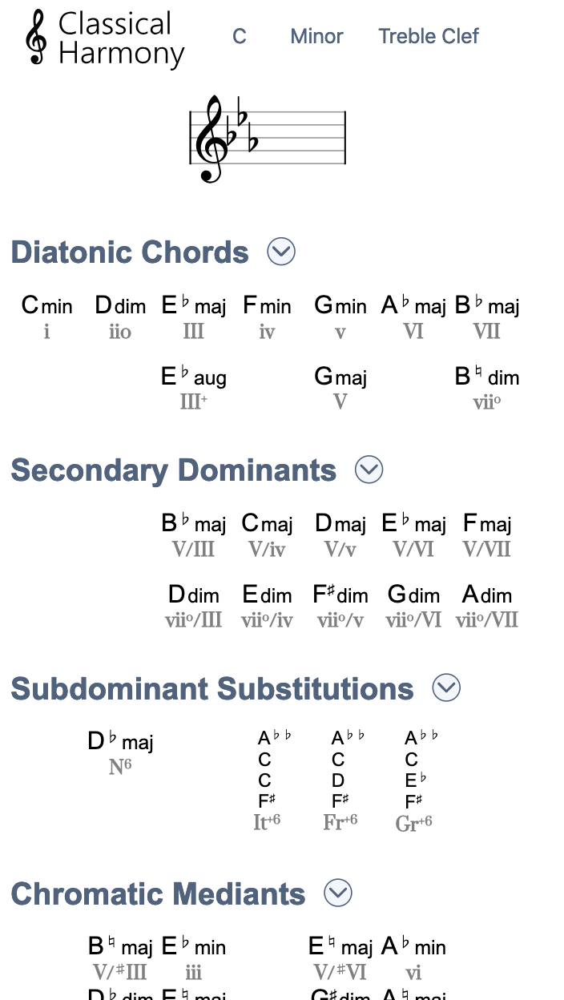

Classical Harmony dynamically displays key signatures and chords used in classical music composition in any of the twelve keys. Built with HTML, CSS, and Javascript.
Designed for composers and music students, Classical Harmony allows users to select any key to view the following information about it:
- Key Signature
- Diatonic Chords
- Secondary Dominants
- Subdominant Substitutions
- Chromatic Mediants
Built with HTML, CSS, Javascript, and VexFlow.
 Live
Live Github
Github